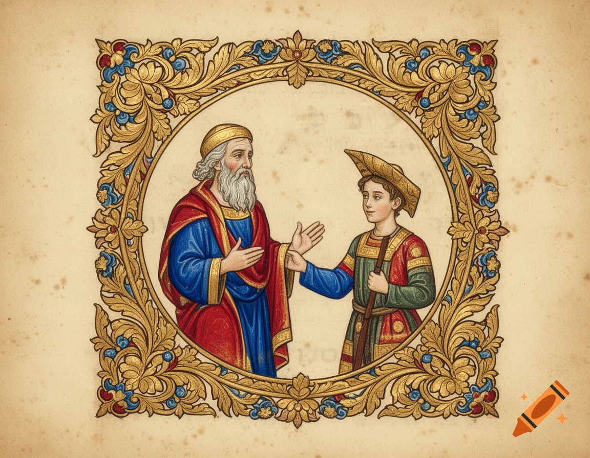
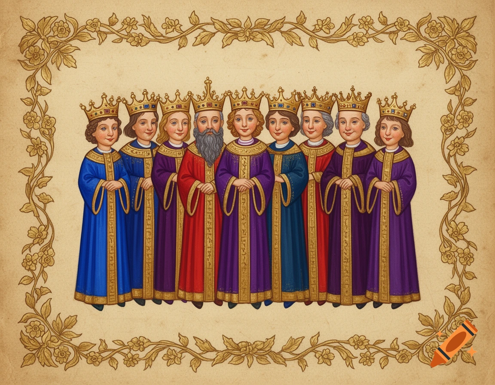

❧
❧
❧
❧
Parashat Yitro
פָּרָשַׁת יִתְרוֹ
Exodus 18:1 – 20:23 | שמות י״ח:א׳ – כ׳:כ״ג
A Source Sheet for Children & Families

וַיִּשְׁמַ֞ע יִתְר֨וֹ כֹהֵ֤ן מִדְיָן֙ חֹתֵ֣ן מֹשֶׁ֔ה אֵת֩ כׇּל־אֲשֶׁ֨ר עָשָׂ֤ה אֱלֹהִים֙ לְמֹשֶׁ֔ה וּלְיִשְׂרָאֵ֖ל עַמּ֑וֹ כִּֽי־הוֹצִ֧יא יְהֹוָ֛ה אֶת־יִשְׂרָאֵ֖ל מִמִּצְרָֽיִם׃
"Jethro priest of Midian, Moses' father-in-law, heard all that God had done for Moses and for Israel—God's people: how the ETERNAL had brought Israel out from Egypt."
— Exodus 18:1 (JPS)
The whole world heard about the miracles, but only Yitro acted on what he heard. He left his comfortable home to join the Jewish people. Hearing isn't enough—we must act on what we learn!
✦ ❦ ✦

וְעַתָּ֗ה אִם־שָׁמ֤וֹעַ תִּשְׁמְעוּ֙ בְּקֹלִ֔י וּשְׁמַרְתֶּ֖ם אֶת־בְּרִיתִ֑י וִהְיִ֨יתֶם לִ֤י סְגֻלָּה֙ מִכׇּל־הָ֣עַמִּ֔ים כִּי־לִ֖י כׇּל־הָאָֽרֶץ׃ וְאַתֶּ֧ם תִּהְיוּ־לִ֛י מַמְלֶ֥כֶת כֹּהֲנִ֖ים וְג֣וֹי קָד֑וֹשׁ
"Now then, if you will obey Me faithfully and keep My covenant, you shall be My treasured possession among all the peoples. Indeed, all the earth is Mine, but you shall be to Me a kingdom of priests and a holy nation."
— Exodus 19:5-6 (JPS)
In ancient times, only a few special people could be priests. But God says the entire Jewish people can be like priests! This means everyone—kids included—can do holy things and make the world better.
✦ ❦ ✦
וַיְדַבֵּ֣ר אֱלֹהִ֔ים אֵ֛ת כׇּל־הַדְּבָרִ֥ים הָאֵ֖לֶּה לֵאמֹֽר׃
"God spoke all these words, saying:"
— Exodus 20:1
א
אָנֹכִי ה׳ אֱלֹהֶיךָ
I am the LORD your God
ב
לֹא יִהְיֶה לְךָ אֱלֹהִים אֲחֵרִים
No other gods
ג
לֹא תִשָּׂא אֶת שֵׁם ה׳ לַשָּׁוְא
Don't misuse God's name
ד
זָכוֹר אֶת יוֹם הַשַּׁבָּת
Remember Shabbat
ה
כַּבֵּד אֶת אָבִיךָ וְאֶת אִמֶּךָ
Honor your parents
ו
לֹא תִרְצָח
Don't murder
ז
לֹא תִנְאָף
Don't commit adultery
ח
לֹא תִגְנֹב
Don't steal
ט
לֹא תַעֲנֶה בְרֵעֲךָ עֵד שָׁקֶר
Don't lie about others
י
לֹא תַחְמֹד
Don't be jealous of others
Notice that the Ten Commandments were given to everyone—not just to scholars or adults. God spoke to the whole nation, including kids! These rules help us live together in kindness.
✦ ❦ ✦
1. Yitro heard amazing news and decided to visit. What's something important you've heard that made you want to do something?
2. God says we can all be like "priests." What's one holy or kind thing you can do this week?
3. Which of the Ten Commandments do you think is the easiest to follow? Which is the hardest?
4. Yitro gave Moses good advice even though he wasn't Jewish. Has someone unexpected ever given you good advice?

What report did he hear that made him come? The splitting of the Red Sea and the war with Amalek.